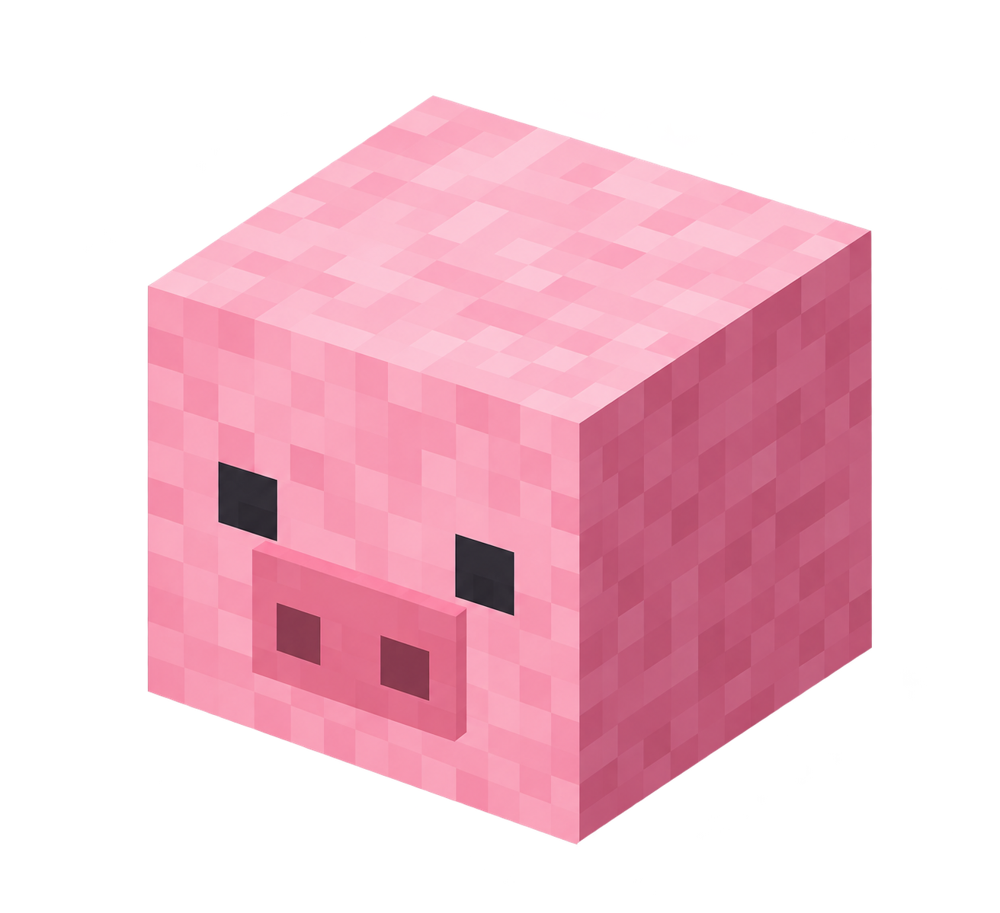

01
Know every frame
Track live FPS, frame pacing, one-percent lows, and Minecraft's memory use from a compact performance HUD.
FRAME TIME6.9 ms

OinksterBuilt for Bedrock on Windows
A focused launcher and in-game toolkit for Minecraft Bedrock. See the performance data that matters, shape your HUD, and keep useful controls close.
Your selected modules are ready and your game is up to date.
01 / TOOLKIT
Oinkster keeps its focus on local information and presentation—giving you a clearer view of the game without taking over the experience.
Track live FPS, frame pacing, one-percent lows, and Minecraft's memory use from a compact performance HUD.
Keep movement keys, clicks per second, and input-to-frame latency visible while you play.
Show coordinates, movement speed, session duration, click totals, and distance travelled.
Arrange HUD modules, tune a local crosshair, add cosmetic motion blur, and keep sprint or background FPS behavior under control.
02 / LAUNCHER SAFETY
Oinkster checks every client build before activation. If the release, file, architecture, or Bedrock version does not match what is expected, the launcher stops.
The launcher validates release metadata with the public key packaged in the app.
The downloaded client must match its signed file size and SHA-256 hash.
Activation requires native x64 Minecraft and the exact supported Bedrock build.
03 / DOWNLOAD
The first public installer is still being prepared. This preview will become the download home when a verified release is available.
04 / FAQ
Oinkster is a Windows launcher and client-side toolkit for Minecraft Bedrock. It provides configurable performance, input, telemetry, status, and visual modules.
The current client code targets Minecraft for Windows version 1.26.5203 on x64. Oinkster refuses to activate against a different game build.
The public installer has not been released. The download control will only be enabled after a real, verified package URL is configured.
No. Oinkster is an independent project and is not affiliated with, endorsed by, or sponsored by Microsoft or Mojang Studios.